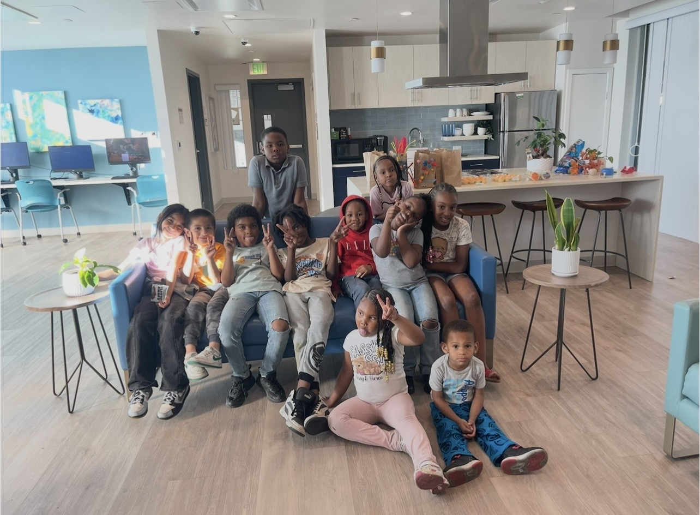

Family & Children Support Services That Help Families Thrive
ACOF’s developmental programs help families and children thrive by sustaining the relationships, learning experiences, and community connections that foster confidence, skills, resilience, and positive futures.
Continued support strengthens opportunities for children and families to experience belonging, participation, and growth within a supportive community environment.